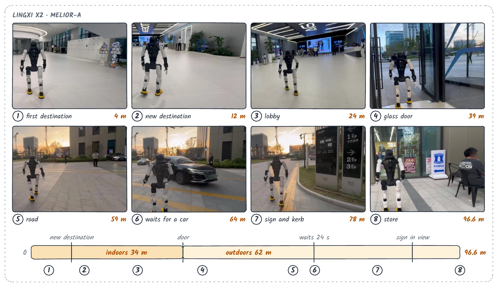

数据引擎
三类数据，各回答一个问题
开源场景提供约 631 万个步级导航样本。部署场地的数字孪生让模型学习在走偏后回到路线。真机采集则记录机载相机随步态产生的晃动和实际走过的距离。
* 同等贡献 † 项目负责人 ✉ 通讯作者

跟随第三人称镜头，看灵犀 X2 接到新指令，穿过玻璃门，沿室外步道走到罗森店门口。

开源场景提供约 631 万个步级导航样本。部署场地的数字孪生让模型学习在走偏后回到路线。真机采集则记录机载相机随步态产生的晃动和实际走过的距离。
两种模型都接收语言指令与内置相机的 RGB 图像。MELIOR-A 预测前进、转向或停止等动作。MELIOR-N 输出一个局部导航目标，供机器人执行。
规划器拆解指令，在停步时复核进度。MELIOR 负责沿路行走，MELIOR-X 负责最后几米的目标接近。避障层协调通行，目标接近与底层控制还使用激光雷达和里程计。

在同一条通往罗森的路线上，X-Navarch 与 MELIOR-N 组合通过了三处动态障碍、两处静态障碍和两段狭窄通道。机器人在店门口停下。 见图 13
R2R-CE · RxR-CE · X-Nav-Twin
arXiv · cs.RO · 2026
@misc{huang2026xnav,
title = {{X-Nav Technical Report: Real-World Long-Horizon Indoor-to-Outdoor Navigation on a Humanoid Robot}},
author = {Jiaxin Huang and Chengxing Lin and Xiaoyu Luo and Sirui Chen and
Jingyu Guo and Aolin Li and Kairui Chen and Rui Zhen
and Cheng Wen and Kerui Gu and Shunyao Wang and Zhihui
Peng and Shaoli Huang},
year = {2026},
eprint = {2611.17598},
archivePrefix = {arXiv},
primaryClass = {cs.RO},
doi = {10.48550/arXiv.2611.17598},
url = {https://arxiv.org/abs/2611.17598}
}技术报告及论文插图由 Jiaxin Huang 等人创作，采用 CC BY 4.0 许可。